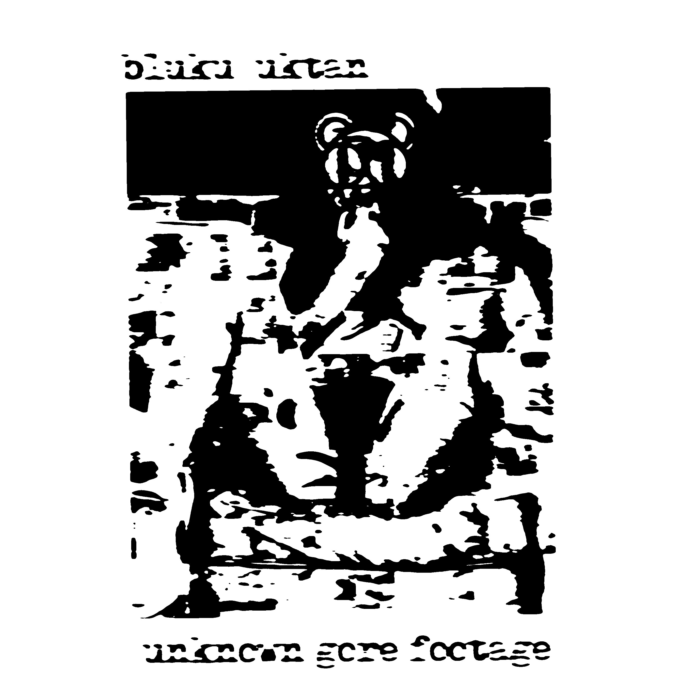
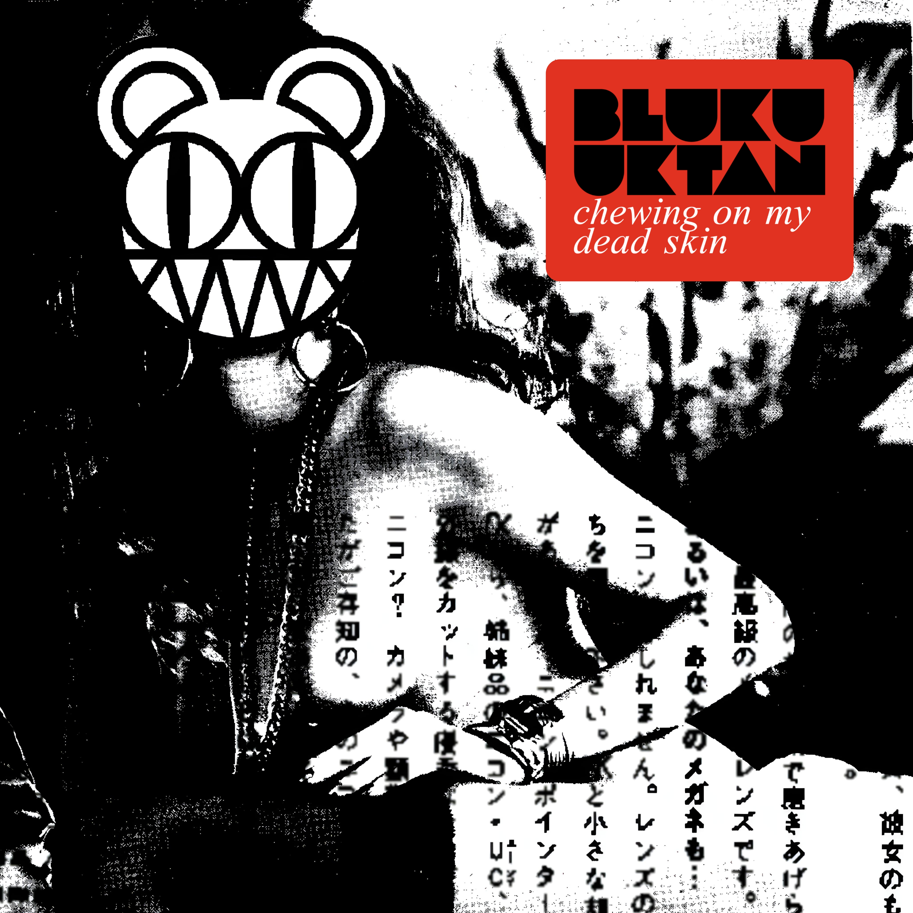
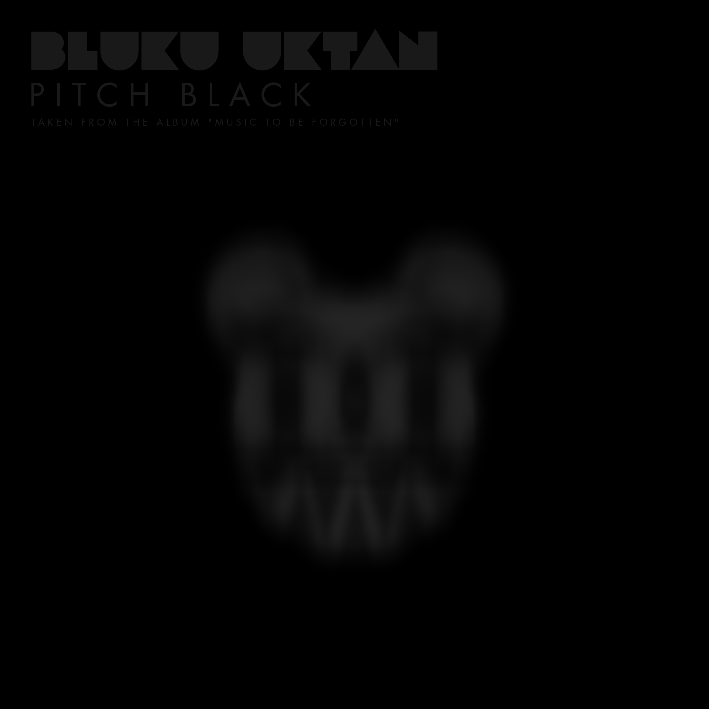

home |
music |
images |
links |
| order | album cover | name | release date | stream | notes |
| 1 |  | unknown gore footage | 2024.01.15. | soundcloud | recorded in january using fl studio. my 1st even recording.
taken from the album "unknown gore footage" |
| 2 |  | chewing on my dead skin | 2024.01.16. | soundcloud | recorded in january using fl studio. heavily influenced by
whitehouse's early work. |
| 3 |  | pitch black | 2024.01.28. | soundcloud | taken from the album "music to be forgotten" |
| - |  |
torture music | - | - | forthcoming |
| - | |
music to be forgotten | - | - | forthcoming |